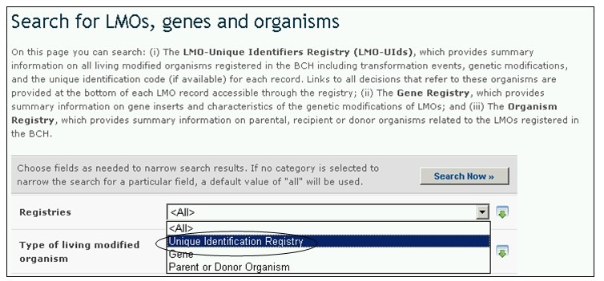

独特识别码登记库提供了所有改性活生物体纪录条的信息概要，包括转化事件、基因改性及每一个记录条的独特识别码（若有的话）。记录条还提供了涉及这些生物体的所有决定和风险评估报告的链接。
生物安全信息交换所中央门户网站对于改性活生物体采用一套独特的标识系统，以便于搜索和提取信息。目前，在国际上得到使用的唯一现有独特标识系统是经合发组织转基因植物独特标识码。
经合发组织独特标识码是分配给每一个得到商业使用（包括用于食品或饲料）许可的改性植物的一个简单的字母数字代码，与用于识别书籍的ISBN（国际标准书号）类似。经合发组织命名系统的设计方式使得新型转基因植物的开发者可以生成一个识别码，并将这一识别码包括在他们在安全评估过程中提交给国家主管部门的材料中。一旦得到批准，国家主管部门将该独特识别码提交给经合发组织秘书处，包括在该组织产品数据库中，并且这一信息与生物安全信息交换所自动共享。
独特识别码是一个九位数的代码，包含三个组成部分，用联字符(-)分开。这三部分是：
- 2或3位字母-数字，表明申请者；
- 5或6位字母-数字，表明转化事件；
- 一位数字用于核实（旨在减少错误，确保字母-数字代码的完好无误）。

图 42
对于通过一个以上过去已得到核准用于商业化的转化事件（通常称为转化事件“叠加”）所产生的产品可采用两种做法。申请人可以选择对这些产品生成新的独特识别码，或者可选择使用过去已得到核准用于商业化的产品的独特识别码的组合。
独特标示登记库对于每一个独特生物体或转化事件均有一个单独的纪录条，其中包括有关该生物体的详细信息。登记库将这些信息以列表格式概括，可选择每一条记录从而获取进一步详情。
改性活生物体登记库中的纪录条提供下列信息：
1. 开发者、公司或申请者的联系信息；
2. 改性活生物体的名称和识别（贸易名）；
3. 独特识别码（若有的话）；
4. 与此有关的改性活生物体的信息
5. 有关受体或亲本生物体的信息（包括生物分类名或状况、常用名和收集点或获取点）
6. 有关该改性活生物体的信息（包括转化事件、改性所使用的工艺、基因嵌入、供体生物体收集点或供体生物体获取点、引入或改性的特征和基因改性的描述）；
7. 有关商业状况的信息（如（一）许可使用（至少在一个国家）；（二）开发商不再开发生产或（三）从未商业化，并包括有关商业状况的信息来源）；及
8. 其他有关信息和参考信息。
每一个改性活生物体记录顶端的三个工具条提供下列链接：
- 有关该改性活生物体的一般性信息；
- 有关该改性活生物体的国家决定；和
- 风险评估。

图 43